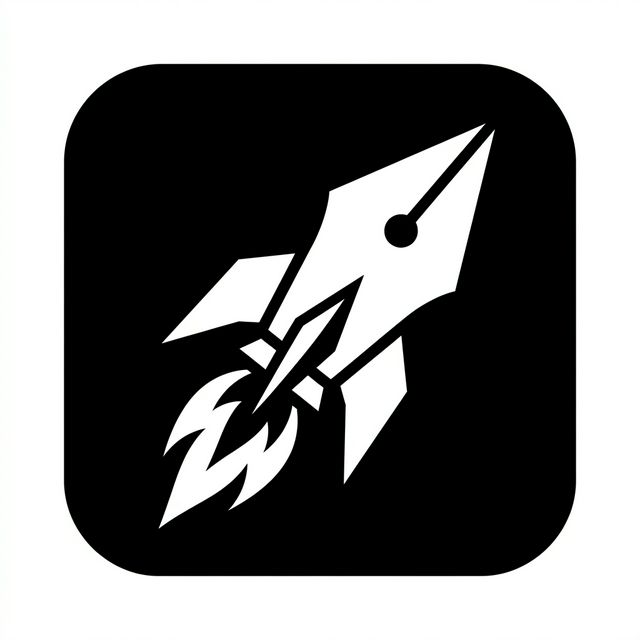

Project Vision
Kali Note is an intelligent system that functions as a second brain.
Secure environment for your thoughts – from Apple devices to the cloud.


Source Code ↗
GitHub Repository / Managed baseline
🗄️
Distributed Architecture
SQLite Identity & Sync Parity
Core Backend
The backend is based on a **relational SQLite database** that acts as a central intelligence hub on the server.
Edge Databases (Local Storage)
Each client uses its own local instance for maximum offline performance and data sovereignty.
iOS (Swift / SQLite)
Android (SQLite)
Linux (SQLite)
Browser (Cache/IndexedDB)
Architectural Design
The schema was fully developed via **AI prompts** and realized through **dbdiagram.io**. It enables agile, AI-supported further development of the table structure.